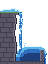

Pixel FX Designer alternatives for pixel-art fire, smoke, explosions and water: 8 tools compared
Checked on 19 October 2026 by the makers of Pixelbolt, and updated on 27 October to add Pixel VFX Forge: alternatives to Pixel FX Designer (CodeManu's particle-effect app, US$9.99 on Steam) include its maker's SpriteMancer and Fluid FX, the node-based Pixel Composer, the free browser apps PHOSPHOR and Pixel VFX Forge, BlastFX and Pixelbolt. All of them except BlastFX and Pixel VFX Forge run a fluid or material simulation for smoke, fire or liquids, which Pixel FX Designer does not; Pixel VFX Forge stacks stylised layers such as slashes, beams, shockwaves and lightning instead. Pixelbolt, free and MIT-licensed like PHOSPHOR, is the only one of the eight with an MCP server that makes the effects (Pixel VFX Forge's agent skill renders with a Node script and uses Scenario's MCP server for character art); measured on one Windows PC, its 0.9.0 release compiled each of its 10 fire, smoke, explosion, magic and water presets three times to byte-identical files in 0.12–0.49 s per command, and Pillow, a decoder independent of Pixelbolt's code, found only palette colours in every exported frame. Pixel Composer, PHOSPHOR and Pixel VFX Forge also document a way to render effects from a script; the others are used through their own window. We read the other seven tools' pages and docs without running them (for Pixel VFX Forge, also its agent skill's source), so the only measured numbers here are Pixelbolt's. Method, sources and data are below.
We make Pixelbolt. Read this as a vendor's page: our own numbers come from runs you can repeat, and everything about the other tools links to the page we read it on. We are not affiliated with CodeManu (Pixel FX Designer, SpriteMancer, Fluid FX) or with the makers of the other tools here. Pixelbolt borrowed several ideas from Pixel Composer's node set, adapted to text recipes, and its README credits them. If we got something wrong, open an issue and we will correct it.
The short answer
- You want to design particle effects by hand, with sliders, on Windows: Pixel FX Designer. Its Steam page says SpriteMancer, from the same maker, "includes most of the functionality of this software" and asks buyers to be aware of it before purchasing; it adds that Pixel FX Designer is still updated and maintained. Its latest stable version is 1.1.8.0, from April 2024.
- You want particles, a fluid simulation, a node graph and 3D models in one Windows app: SpriteMancer (CodeManu, US$24.99 on Steam, still in Early Access; version 0.4.0.0 came out on 1 October 2026).
- You want smoke, explosions, blood and magic from presets and sliders, on Windows: Fluid FX (CodeManu, US$9.99 on Steam). It runs a fluid simulation and exports a PNG sprite sheet.
- You want a node graph with smoke and FLIP liquid simulations on Windows, macOS or Linux, and to re-run a saved project from a script: Pixel Composer (US$14.99; its source is MIT-licensed, but current builds are paid).
- You want something free in the browser, with falling sand-style materials, rigid and soft bodies, a palette lock and JSON scenes an agent can write: PHOSPHOR (MIT, version 0.1).
- You want GPU particles with post-effects such as palette mapping, pixelation, glow and outline, on Windows, macOS or Linux: BlastFX (US$19.99 on Steam or itch.io).
- You want ready-made stylised combat and magic effects (sword slashes, beams, shockwaves, lightning, magic circles, damage numbers) to remix in the browser, preview on a character and download as MP4, GIF, a sprite sheet or a Godot 4 resource, with an agent skill that renders the same JSON recipes: Pixel VFX Forge (Scenario, free; announced on 26 October 2026). Its making-of describes it as a library of 42 hand-built effects.
- You want an AI agent (Claude Code, Codex, Cursor, Claude Desktop) to make and revise the effect over MCP (or a command line), seeing each result as an image, with the same files on every run and no colour outside your palette: Pixelbolt (free, MIT). You or the agent describe the effect in JSON; there is no hand-drawing editor for effects.
Side by side
Pixelbolt's column is measured (see below) or taken from its own docs. The other columns come from each tool's store pages, docs and source, read on 19 October 2026 (Pixel VFX Forge on 27 October) and linked under Sources; we did not run them. "Not stated" means the pages we read don't say.
| Pixelbolt | Pixel FX Designer | SpriteMancer | Fluid FX | Pixel Composer | PHOSPHOR | BlastFX | Pixel VFX Forge | |
|---|---|---|---|---|---|---|---|---|
| How effects are made | A JSON source compiled on the CPU: a fluid simulation (gases and liquids) or seeded particle emitters, baked into palette pixels frame by frame | Particle emitters tuned with sliders, or particle motion drawn with the mouse, in a desktop app | Layers of particles, emitters and fluids, plus a node graph and imported 3D models, in a desktop app | A fluid simulation started from 20+ presets and tuned with sliders, in a desktop app | A node graph with hundreds of nodes (its site says over 300), including particle, smoke, FLIP liquid, rigid-body, strand and verlet simulation nodes | A browser app: cellular materials (water, sand, smoke, fire, lava and more), rigid and soft bodies, cloth, ropes, force fields and particle emitters, on a keyframe timeline | GPU particle emitters with render layers and chains of post-effects, in a desktop app | Layers of 22 types (fireball, shockwave ring, slash, beam, lightning, magic circle, smoke puffs, particles, pixel text and more), each writing a heat field that is cut into hard bands of a 4–7 colour ramp; 42 library effects remixed with words or an inspector in a browser, or a JSON recipe rendered by its agent skill's Node script |
| Fluid simulation | Yes: gases with a grid solver (stable fluids, vorticity, buoyancy) and liquids as FLIP particles, one grid cell per pixel, up to 128×128 | None described | Yes: a "Fluids" element that simulates fluid pressure for smoke, fire and explosions; the method isn't stated | Yes: a "fluid/pressure simulation", powered by Mytino's Fluid Dynamics for GameMaker, which runs on shaders; the method isn't stated | Yes: smoke simulation nodes and FLIP liquid nodes (the docs give a FLIP-to-PIC ratio) | Cellular materials (water, smoke, fire, steam) and liquid and gas emitter behaviours; no grid fluid solver described | None stated | None described; fire and smoke are noise-shaped layers |
| Runs on | Node.js 20 or newer on Windows, macOS or Linux (its CI tests all three; we measured on Windows) | Windows; an older macOS build on itch.io | Windows | Windows | Windows, macOS, Linux | A desktop browser (Canvas 2D), from itch.io or a local folder; not phones | Windows, macOS, Linux | A browser (it renders in module workers); the agent skill's script needs Node.js 18 or newer |
| Price (US list price; sales on 19 Oct 2026) | Free | US$9.99 on Steam (US$6.99 in a week-long Steam deal that ran until 19 Oct); US$19.95 on itch.io (US$14.96 in a sale until 10 Nov 2026), with a Steam key | US$24.99 on Steam, Early Access (US$17.49 in the same Steam deal); US$29.95 on itch.io (US$22.46 until 10 Nov) | US$9.99 on Steam (US$6.99 in the same Steam deal); US$19.95 on itch.io (US$14.96 until 10 Nov) | US$14.99 on Steam; US$15 on itch.io | Free (donations optional) | US$19.99 on Steam or itch.io (itch.io includes a Steam key) | Free, with no account for the web page; the agent skill's optional character art through Scenario's MCP server is paid |
| Source code | MIT | No source offered | No source offered | No source offered | MIT on GitHub; building it needs the GameMaker IDE, and the newest free binary on GitHub is 0.8.2 (2022) | MIT (its itch.io code licence) | No source offered | The skill download is readable JavaScript (engine, prompt interpreter, render script) with no licence file or notice; Scenario's MIT-licensed skills repository on GitHub doesn't include it |
| Exports | PNG sprite sheet with atlas JSON, numbered PNG frames, animated PNG, GIF, CSS, a Canvas player, and frame folders for video editors | PNG sprite sheet or frame by frame (Steam page); GIF (marked experimental in its docs); the emitter data as JSON | PNG sprite sheet, a PNG per frame, GIF (without alpha), MP4, WEBM | Trimmed PNG sprite sheet; GIF for previews | Sprite sheets (a Render Spritesheet node); PNG, JPG or WEBP images and sequences (PNG also indexed); GIF, APNG, MP4, WEBM (MP4 needs a separate FFmpeg) | PNG frames (the current frame, or a sequence from its render tool), sprite sheet (with a JSON sidecar from its render tool), looping GIF, scene JSON, an HTML player, layers as a ZIP | Sprite sheet, PNG sequence, GIF; video (uncompressed AVI per the store page; MP4, WebM and AVI through a separately installed FFmpeg per its docs) | Web page: MP4 (H.264, 16:9, 1:1 or 9:16), transparent GIF, PNG sprite sheet, and a ZIP with frames, GIFs, a
TexturePacker-style atlas with Aseprite frame tags, a Godot 4 SpriteFrames .tres and the recipe. Agent
skill: sprite sheet, atlas JSON with the impact frame and pivot, GIF, PNG frames, and a preview GIF over your own
image |
| Palette control | Colours come only from the source's palette (measured: no other colour in any frame), with ordered dither | Import a palette of up to 256 colours; custom dithering | No palette lock stated; a Scale setting gives the render a pixelated look | Not stated | Palette and dither nodes; indexed PNG | Palette lock with ordered dithering (PICO-8, Game Boy, NES or your own) | Palette Map and Pixelate post-effects | Hue-shifted ramps (27 named, or your own colours) with optional 4×4 Bayer dither; a palette lock maps every colour to PICO-8, Sweetie 16, Endesga 32, Game Boy, 1-bit or your own list (nearest in OKLab) |
| Without the GUI | An MCP server (8 tools), a command line and a JavaScript API | None documented | None documented | None documented | A headless mode runs a saved project and triggers its export nodes, with variables set from the command line; a
persist or server mode stays open for console commands such as set and render |
Command-line tools render (through an installed Chrome or Edge), validate and summarise JSON scenes; a SKILL.md for AI agents; its page mentions no MCP server | None stated | A SKILL.md and a Node script that renders a recipe, or a prompt in its fixed vocabulary; no MCP server for effects (the skill uses Scenario's MCP server for character art) |
| Same output every run | Measured: byte-identical across runs, and the same recipes in Node, Chromium, Firefox and WebKit | Not stated | A render option sets the random seed | Not stated | Seed inputs on some nodes; repeatability not stated | Its page says the engine is "deterministic and seed-based" | A random seed per emitter (its docs); repeatability not stated | Its reference says the same recipe and seed give identical frames. Its engine uses Math.sin,
cos, atan2 and other functions that JavaScript engines may round differently, so identical
output across browsers is not guaranteed by design; not measured |
| GPU | Not used | Steam minimum lists a GeForce GTX 670 | Not stated | Steam minimum lists a GeForce GTX 670 | An OpenGL GPU or integrated GPU | None stated (Canvas 2D) | OpenGL 3.3 | Not used (its skill says no GPU) |
| Latest version | 0.9.0, 18 October 2026 | 1.1.8.0, April 2024 (a 2.0 beta from 2022) | 0.4.0.0, 1 October 2026 | 1.1.0, January 2022 | 1.22, 28 September 2026 (current build 1.22.0.5, October 2026) | 0.1 (its devlog is from August 2026) | 2.0.6, August 2026 | Engine version 1; announced 26 October 2026 |
Pixelbolt's presets, as exported in our run
These are six of the 1× GIFs our run exported from Pixelbolt 0.9.0, shown at 3× with nearest-neighbour scaling on a dark background. They are the same files the checks below decoded. The explosion is a one-shot effect, so it plays once; reload the page to see it again.

What we measured on Pixelbolt
On 19 October 2026 we ran Pixelbolt 0.9.0 and the newer main on one Windows 11 PC (AMD Ryzen 9
7950X3D, Node.js 24.19.0). Every file in the pixelbolt.mcpb bundle on the
0.9.0 release, whose SHA-256 matches the
published .sha256, is byte-identical to the tagged source we compiled from, except the manifest the release
generates (check). The tag's 241 tests pass
(log), and so do main's 256
(log). Each claim below links to its data.
- Repeatable: each of the 10 fluid presets in 0.9.0 (12 on
main) compiled three times, each in its own process, to byte-identical recipes. Rendering each recipe twice gave byte-identical sprite sheets, frames, atlases and GIFs (0.9.0,main). The particle example (effects.fx.json, 57 frames) also compiled three times to the same bytes (log). - The same in browsers: headless Chromium 156, Firefox 157 and WebKit 26.6 compiled every preset to
the same recipe as Node. We compared Pixelbolt's revision ids, the first 12 hex digits of each recipe's SHA-256
(0.9.0,
main). - Only palette colours: we decoded every exported frame with Pillow 12.0.0, a decoder independent of
Pixelbolt's code. Every visible pixel in every frame of every preset was one of the source's palette colours, and none
was semi-transparent. The sprite sheet matched the frames pixel for pixel, and so did the 1× GIF, with the same frame
timings (0.9.0,
main). - Time: one
pixelbolt compilecommand took 0.12–0.49 s per preset, Node's start-up included; the waterfall was the slowest (data). Over MCP, where the server also renders the contact sheet it sends back,pixel_compiletook 0.07–0.61 s (data). - An agent's round trip over MCP (0.9.0,
main): for 0.9.0 we ran the server from the release's bundle.pixel_compilereturned a revision id and a PNG contact sheet for every preset. Sending the same source again returned the same revision id, and each id equalled the one computed from the recipe the command line compiled.pixel_renderthen exported the campfire's sprite sheet, frames and GIF in 0.18 s. Adding wind to the campfire source and compiling again took 0.28 s and gave a new revision. - Loops: seven of the 0.9.0 presets loop. In six, the jump from the last frame back to the first changed no more pixels than the largest change between two ordinary neighbouring frames. In the steam vent it changed 169 pixels, against at most 168 elsewhere in the loop (data).
| Preset | Kind | Size | Frames | Source JSON (bytes) | Compile, 3 runs (ms) | Colours used | Pixels changed at the loop seam |
|---|---|---|---|---|---|---|---|
| Campfire | Gas | 32×48 | 24 | 2,742 | 227 / 235 / 229 | 9 of 9 | 92 (others 73–115) |
| Drip | Liquid | 16×32 | 24 | 3,944 | 147 / 137 / 136 | 4 of 7 | 6 (others 2–25) |
| Explosion | Gas | 64×64 | 32 | 8,497 | 267 / 265 / 268 | 8 of 8 | one-shot |
| Magic swirl | Gas | 48×48 | 24 | 5,733 | 233 / 233 / 240 | 5 of 5 | 274 (others 222–285) |
| Bubbling potion | Liquid | 32×40 | 24 | 5,168 | 217 / 213 / 217 | 7 of 7 | 12 (others 10–37) |
| Smoke puff | Gas | 32×32 | 19 | 2,747 | 124 / 123 / 121 | 5 of 5 | one-shot |
| Splash | Liquid | 48×40 | 40 | 2,564 | 196 / 195 / 193 | 4 of 4 | one-shot |
| Steam vent | Gas | 32×48 | 24 | 5,736 | 216 / 218 / 221 | 7 of 7 | 169 (others 89–168) |
| Torch | Gas | 16×32 | 16 | 2,070 | 126 / 125 / 125 | 9 of 9 | 23 (others 12–23) |
| Waterfall | Liquid | 48×64 | 24 | 6,265 | 492 / 492 / 491 | 9 of 9 | 109 (others 84–129) |
Compile times are whole pixelbolt compile commands, Node's start-up included. "Colours
used" counts the distinct colours in all exported frames against the palette's size. The seam column counts pixels
that differ between the last frame and the first; "others" is the range between neighbouring frames inside the
loop.
main (d8776d4, not yet released) passed the same compile, render, browser, Pillow and MCP
checks with 12 presets; we ran its MCP server from the checkout, not from a bundle. It adds honey (viscosity) and slime
(a yield stress). Its drip and potion differ slightly from 0.9.0's, because it stopped fast particles passing through
thin obstacles. Its waterfall differs because of that fix, a depth-band fix and a retuned preset. The other seven
presets compile to the same recipes as in 0.9.0.
Each tool, and when to choose it over Pixelbolt
From each tool's own pages, read on 19 October 2026 (Pixel VFX Forge on 27 October); not run by us.
Pixel FX Designer (CodeManu)
A desktop app for particle effects: emitters, motion, a timeline, physics such as attractors and gravity points, post-effects (glow, outline and others) and custom particle shapes, set with sliders, or with the particles' motion drawn with the mouse. You can import a palette of up to 256 colours and your own dithering, and make an animation loop. It exports a PNG sprite sheet or single frames. GIF export is marked experimental: its docs say to use it only with at most 60–120 frames, Scale 4 and a 400×400 canvas, as other settings may crash. A JSON export holds the emitter data so you can rebuild the effect in your engine. It comes with 1,000+ particle images and ready-made projects. It was released on Steam in 2018. The latest stable version is 1.1.8.0, from April 2024; a 2.0 beta from 2022 rewrites it with layers, a node graph and MP4 export. Its docs describe no command line or scripting, and none of its pages describes a fluid simulation.
Choose it over Pixelbolt when you want to shape a particle effect by eye, with sliders or by drawing the particles' motion with the mouse, on Windows and for little money, with your own palette of up to 256 colours and your own dither pattern, plus 1,000+ bundled particle images and ready-made projects.
SpriteMancer (CodeManu)
A newer, broader tool from the same maker, in Steam Early Access since January 2023; version 0.4.0.0 came out on 1
October 2026. It combines particles, emitters, a "Fluids" element (its docs say it "simulates fluid pressure" for
smoke, fire and explosions), images, imported .obj models and a node graph. It exports PNG sprite sheets,
a PNG per frame, GIF (without alpha), MP4 and WEBM; a render option fixes the random seed, and a Scale setting gives
the render a pixelated look. Windows only. Its docs mention neither a palette lock nor a command line.
Choose it over Pixelbolt when you want one visual app for particles, fluids, 3D models and node effects, edited by hand, with video export.
Fluid FX (CodeManu)
A Windows app built on a "fluid/pressure simulation", powered by Mytino's Fluid Dynamics asset for GameMaker, whose own page says its physics and visualisation run on shaders. You pick one of 20+ presets, tune sliders, and export a trimmed PNG sprite sheet with alpha; you can render your own reference image into it, and export and import presets. GIF export is for previews. Version 1.1.0 is from January 2022. Its pages don't mention palette control, seeds or a command line. The effects they list are explosions, blood, smoke, dust and magic; water is not among them. Its Steam page carries the same SpriteMancer notice as Pixel FX Designer's.
Choose it over Pixelbolt when you want a quick smoke, blood or explosion sheet from one of 20+ presets, tuned with sliders on Windows, with alpha in a trimmed sheet and your own reference image rendered in.
Pixel Composer (MakhamDev)
A node-based compositor for pixel art and effects on Windows, macOS and Linux. Its simulation nodes include smoke
(a domain with pressure, dissipation and emitters, written as GPU shaders in its source), FLIP liquids (with
viscosity, friction and a FLIP-to-PIC ratio), particles and VFX with many affectors, rigid bodies, strands and verlet.
Palette and dither nodes and indexed PNG export keep a pixel-art look. It renders sprite sheets and exports images,
sequences, GIF, APNG, MP4 and WEBM. It can also import 3D objects with lighting and cameras, and .aseprite
files. Its headless mode (-h) runs a saved project and triggers its export nodes, with variables set on
the command line, and a persist or server (TCP port) mode keeps it open for console commands such as
set and render. Its docs, labelled "pre 1.18", put persist and server in a separately
downloaded CLI wrapper, since the app prints nothing to the console; the current source also parses them in the app.
No MCP server is mentioned. Its source is MIT-licensed on GitHub, but current builds cost
US$14.99, and building it yourself needs the GameMaker IDE. It needs an OpenGL GPU or integrated GPU.
Choose it over Pixelbolt when you want a visual node graph with more kinds of simulation (rigid
bodies, strands, verlet meshes such as cloth), 3D objects with lighting and cameras, .aseprite import, video export and
a GUI for building new effects. Pixelbolt's fluids stop at 128×128 and are written as JSON; Pixel Composer's docs state
no domain limit.
PHOSPHOR VFX (Sinopsky)
A free, MIT-licensed effects studio that runs in a desktop browser with Canvas 2D, from itch.io or a downloaded folder. It simulates cellular materials (water, sand, smoke, stone, lava, fire, oil, steam and more, with chained reactions), rigid bodies that fracture, soft bodies, cloth, ropes and force fields, plus particle emitters with seven behaviours, on a keyframe timeline with 61 presets. Canvases run from 16 to 256 pixels. Its post-effects include a palette lock with ordered dithering (PICO-8, Game Boy, NES or your own), posterize, outline, chromatic aberration, scanlines and bloom. It exports PNG frames, sprite sheets, looping GIFs, scene JSON, an HTML player and layers as a ZIP. Scenes are plain JSON. Command-line tools render a scene to a sprite sheet, frames or GIF through the Chrome or Edge you have installed, validate it and summarise it, and a SKILL.md explains the format to AI agents. Its page says the engine is deterministic and seed-based, and mentions no MCP server. The download is version 0.1, and its one devlog is from August 2026.
Choose it over Pixelbolt when you want a free visual editor in the browser, with physics Pixelbolt doesn't have (falling-sand materials, fracturing rigid bodies, cloth and ropes), post-effects it lacks (bloom, chromatic aberration, scanlines), larger canvases (Pixelbolt's fluids stop at 128×128), and still want JSON scenes an agent can write. Of the tools here, it is the closest to Pixelbolt's approach.
BlastFX (MNKY)
A desktop app for Windows, macOS and Linux, on Steam since 2018, with GPU-accelerated particle emitters and render layers, each with a chain of post-effects: Palette Map, Gradient Map, Glow, Outline, Pixelate, Blur, Seamless Tile and others. It exports sprite sheets, PNG sequences and GIF, and video: uncompressed AVI per its store page, or MP4, WebM and AVI through a separately installed FFmpeg per its docs. Its docs give each emitter a random seed and a seamless-looping option. It costs US$19.99 on Steam or itch.io, needs OpenGL 3.3, and its demo can't export. Its pages describe no fluid simulation and no command line.
Choose it over Pixelbolt when you want GPU particles with soft glows and blur that you then pixelate and palette-map, edited by hand, with video export.
Pixel VFX Forge (Scenario)
Added on 27 October 2026, the day after Scenario announced it: a free page in the browser and a downloadable agent skill for stylised combat and magic effects. Its making-of describes it as a library of 42 hand-built effects in five groups (combat, magic, elements, feedback and ambient) that you remix with words or an inspector. The words are read by rules, not a language model: 34 forms (explosion, slash, beam, portal, heal, level up and more), 18 elements (fire, ice, poison, holy, shadow and more) and modifiers for size, speed, colour and style. An effect is a JSON recipe of layers, 22 types in all, each writing a heat field over its own time window. The renderer cuts the heat into hard bands of a hue-shifted 4–7 colour ramp, optionally with a 4×4 Bayer dither, then removes stray pixels, fills one-pixel holes, draws inner or outer outlines and can lock every colour to a retro palette. Loops close because periodic settings complete whole cycles, and a one-shot's impact frame is found automatically or set in the recipe. The page previews each effect on a caster or a target in a 384×216 scene, with a hit flash, knockback and screen shake timed to the impact; that stage art was generated through Scenario's MCP server. It encodes MP4 in the browser and exports GIF, sprite sheets and a game-ready ZIP that includes a Godot 4 SpriteFrames resource. The agent skill carries the same engine and a Node script: an agent writes a recipe, renders it locally, checks the frames and iterates, and can preview the effect over its own character image. Canvases run from 8 to 512 pixels a side and from 1 to 120 frames. Its recipe reference says unknown fields are ignored, so a misspelt setting is skipped rather than reported. The announcement calls the skill open-sourced, but the download carries no licence file or notice, and Scenario's MIT-licensed skills repository does not include it. We read its page, its making-of and the skill's source; we did not run it.
Choose it over Pixelbolt when you want stylised combat and magic effects that Pixelbolt has no ready-made shapes for (sword slashes, beams, shockwave rings, lightning, magic circles, impact stars, claw marks, shields, damage numbers), picked from a library and previewed on a character in the browser, with MP4 for posting or a Godot 4 resource to import. Its skill lets an agent render the same recipes from a Node script, without an MCP server.
When to choose Pixelbolt
When an AI agent should make, check and change the effect over MCP, seeing each result as an image: the agent writes
a few kilobytes of JSON (palette, obstacles, emitters and how fields map to colours), compiles it, looks at the contact
sheet it gets back, and changes one setting at a time, with the same file every time. (PHOSPHOR and Pixel VFX Forge
also take agent-written JSON, through command-line scripts rather than MCP.) The result is an ordinary Pixelbolt recipe, so
the same agent can inspect it, patch single pixels, and export sprite sheets, atlases, GIFs or frames for a video
editor. It is free and needs only Node.js: no account, API key or network service. Install it from the
GitHub repository, or as pixelbolt.mcpb for Claude
Desktop from the latest release.
Pixelbolt's limits
- No hand-editing tool for new effects. A new effect is a JSON source that you or an agent write. The studio's Fluid lab (in its docs; not used for this page) runs a preset in your browser with a few sliders and downloads the result, but there is no emitter editor, timeline or node graph like the desktop apps above.
- No ready-made spell shapes. Pixelbolt has no slash, beam, shockwave ring, lightning or magic-circle primitive: an agent builds them from particle emitters or draws them with lines, ellipses and stamps. Pixel VFX Forge has these as layer types.
- New and bounded. Fluid effects shipped in 0.9.0 on 18 October 2026, the day before this check. A source is refused if it needs more than 32,768 liquid particles, 4,096 sparks or about 400 million cell updates, and flows are capped at 32 pixels a frame.
- Small and 2D. A fluid grid is at most 128×128 cells, one per pixel, and a project at most 256 frames. There are no rigid bodies, cloth, ropes, falling-sand materials or 3D models.
- Hard-edged pixels only. Every pixel is one of the palette's colours. The ten presets use only opaque ones (measured: no semi-transparent pixel), and a palette may include translucent colours, but there is no blur, smooth alpha falloff or additive blending. Dithering stands in for gradients.
- Baked frames. Effects compile to sprite frames, not engine particles. Live fluids in a web page
(
createLiveFluid), honey and slime are onmain, not yet in a release. - Video is frames only. Pixelbolt writes numbered PNGs and the FFmpeg command for a video; it encodes no video itself.
- A large tool list. The MCP server's
tools/listreply is about 136 KB (135,553 bytes on 0.9.0), which an agent pays for in context; the fluid help topic is another 22 KB. - Measured on one machine. Our timings are from one Windows desktop CPU. Pixelbolt's CI runs its tests, fluid golden hashes included, on Linux, Windows and macOS.
Other tools we looked at
Juice FX, Smear FX, the pre-made packs and Pixa's page came up in the four searches named under Method; Pixelpart, Heos Explosions, Particles Editor and BlastFX came from further searches while we researched (BlastFX from a search about Effekseer). All of them are listed in the searches file.
- Juice FX and Smear FX (CodeManu) came up as Pixel FX Designer alternatives, but they animate a sprite you already have (flashes, squash, wobble, smear trails); they don't generate effects. CodeManu's FX Tools bundle on Steam sells SpriteMancer, Pixel FX Designer, Fluid FX, Juice FX and Smear FX together at 25% off.
- Pixelpart (US$24.99, Windows and Linux): a particle editor with plugins for Godot, Unity and GameMaker; it exports sprite sheets, image sequences and video.
- Heos Explosions (US$2.99 or more): a Lua script for Aseprite 1.3 that generates explosions of many types, with a pixel-art mode, as GIFs or sprite sheets inside Aseprite.
- Particles Editor (glideengine; free on the Mac and iOS App Stores, with paid pro features in the app): layered particle effects with a pixelate render option, exported as PNG textures or source code.
- Effekseer (MIT): a 3D particle editor whose recorder exports sprite sheets, numbered images and GIFs; we found nothing pixel-art specific in the pages we read.
- Pre-made effect packs, such as Aim Studios' CC0 explosion sprite sheets, filled most results for "free pixel art fire smoke explosion effect generator sprite sheet". They are art, not generators.
- Pixa's "pixel art particle effect generator" ranked for the same search, but its page returned 404 on 19 October 2026.
- For the search "pixel art VFX particle effects tool for AI agents MCP", the search tool's summary said it found "no dedicated pixel-art particle or VFX tool exposed over MCP". Most of the pixel-art MCP servers it listed are compared on our pixel art MCP server page.
Method
- Searches. On 19 October 2026 we ran four searches for the summary, with an AI agent's web search tool: "Pixel FX Designer alternative", "free pixel art fire smoke explosion effect generator sprite sheet", "pixel art fluid simulation effects tool open source" and "pixel art VFX particle effects tool for AI agents MCP". We ran five more while researching the tools. Pixelbolt appeared in none of the eight whose results we recorded. The results and summaries are in searches-2026-10-19.txt.
- Which tools. We compared tools that generate effects, rather than animate existing sprites or sell finished art, and whose own pages describe pixel-art output control (a palette, pixelation or palette mapping). Fluid FX is the one exception: its pages describe no such control, and we kept it because it is the fluid-simulation tool from Pixel FX Designer's own maker. Pixelpart and Effekseer make particle effects, but the pages we read describe none of these controls. Two tools meet the rule and were left out for scope: Heos Explosions (an Aseprite 1.3 script that makes explosions only) and glideengine's Particles Editor (Mac and iOS App Stores; it exports PNG textures and source code). Pixel VFX Forge, announced on 26 October 2026, meets the rule and was added on 27 October.
- The other tools were read from their store pages, docs, devlogs and (for Pixel Composer) source, on 19 October 2026. We did not download or run them. That was a choice of scope: PHOSPHOR is free and runs in a browser, and the five paid tools have free demos (BlastFX's can't export). So nothing here compares speed or output quality between tools; the only measured numbers are Pixelbolt's. No page we read restricts comparisons.
- Pixel VFX Forge was read on 27 October 2026 from its page and its illustrated making-of. We also
downloaded its agent skill, a 49,821-byte ZIP whose SHA-256 (
f5284ec0…7d23cd2c) matches the hash in its download address, and read its source and recipe reference; we did not run it. - Pixelbolt was measured on Windows 11 Pro (build 26200), an AMD Ryzen 9 7950X3D with about 64 GB
of RAM, Node.js 24.19.0, Pillow 12.0.0 and Playwright's Chromium 156, Firefox 157 and WebKit 26.6. We used two builds:
- release 0.9.0: the tag
2c180d6, plus the release'spixelbolt.mcpbfor the MCP run; mainatd8776d4.
- release 0.9.0: the tag
- Scripts, next to this page:
- pixelfx_measure.mjs compiles every preset three times through the command line, then renders and exports each GIF twice, hashing every file.
- pixelfx_check.py decodes every frame, sprite sheet and GIF with Pillow and checks the palette, the sheet, the GIF and the loop seam.
- pixelfx_mcp_probe.mjs drives the MCP server over stdio.
- pixelfx_browsers.mjs compiles the presets in three browser engines.
<work>,<clone>and<mcpb>; nothing else was changed. - To repeat it, from a folder holding the scripts:
git clone https://github.com/skulitom/Pixelbolt.git git -C Pixelbolt checkout v0.9.0 node pixelfx_measure.mjs Pixelbolt run-cli result-cli.json 3 python -I pixelfx_check.py result-cli.json result-check.json node pixelfx_mcp_probe.mjs Pixelbolt/bin/pixelbolt.js Pixelbolt/examples run-mcp result-cli.json result-mcp.json PLAYWRIGHT_MODULE=/path/to/playwright/index.mjs node pixelfx_browsers.mjs Pixelbolt result-browsers.json
Our 0.9.0 MCP run used the bundle's own files: downloadpixelbolt.mcpbfrom the release, check its SHA-256 againstpixelbolt.mcpb.sha256, unzip it, and pass itsbin/pixelbolt.jsto the MCP script instead.
Sources
Read on 19 October 2026, except Pixel VFX Forge (27 October).
- Pixel FX Designer: itch.io page, Steam page (price, exports, minimum requirements, SpriteMancer notice), documentation, 1.1.8.0 devlog, 2.0 beta devlog.
- SpriteMancer: itch.io page, Steam page, site, docs (elements, exporting, rendering), 0.4.0.0 devlog.
- Fluid FX: itch.io page, Steam page, Mytino's Fluid Dynamics.
- CodeManu's other tools: FX Tools bundle, Juice FX, Smear FX.
- Pixel Composer: GitHub repository (README, licence,
releases,
shaders/, command-line flags inobjects/o_main/Create_0.gml), itch.io page, Steam page, site, docs on simulation nodes, the smoke domain, the FLIP domain, Render Spritesheet, export, dither, the command line and console commands; 1.22 release notes. - PHOSPHOR VFX: itch.io page and devlog.
- BlastFX: itch.io page, documentation, Steam page.
- Pixel VFX Forge: page,
illustrated
making-of (PDF),
agent
skill (ZIP) (
SKILL.md,references/recipe.md,scripts/lib/engine.js,scripts/render.mjs), announcement on X (26 October 2026), Scenario's skills repository. - Also: Pixelpart, Heos Explosions, Particles Editor, Effekseer's recorder and repository, Aim Studios' explosions, Pixa's generator page (404).
- Pixelbolt 0.9.0: README,
CHANGELOG,
fluid effects
guide, fluid schema; on
main: CHANGELOG (Unreleased); this page's data: the files linked in What we measured.